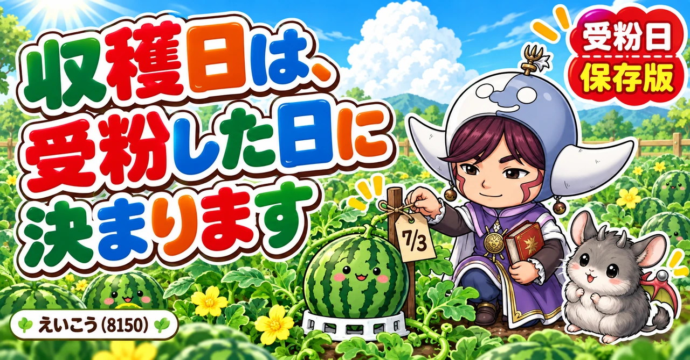
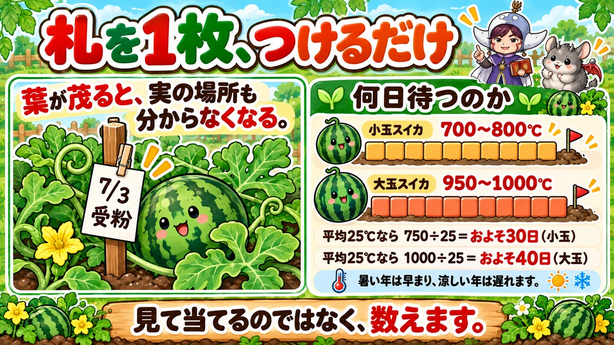
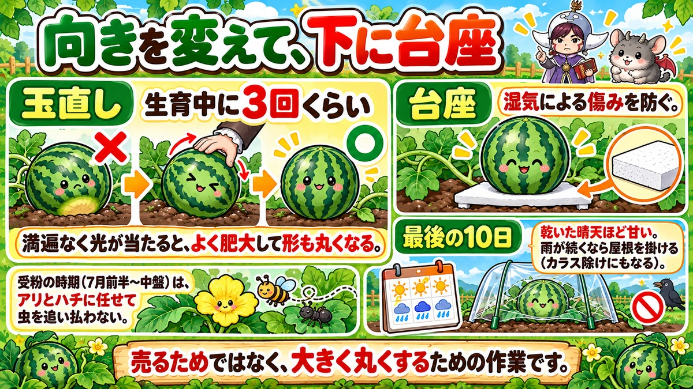
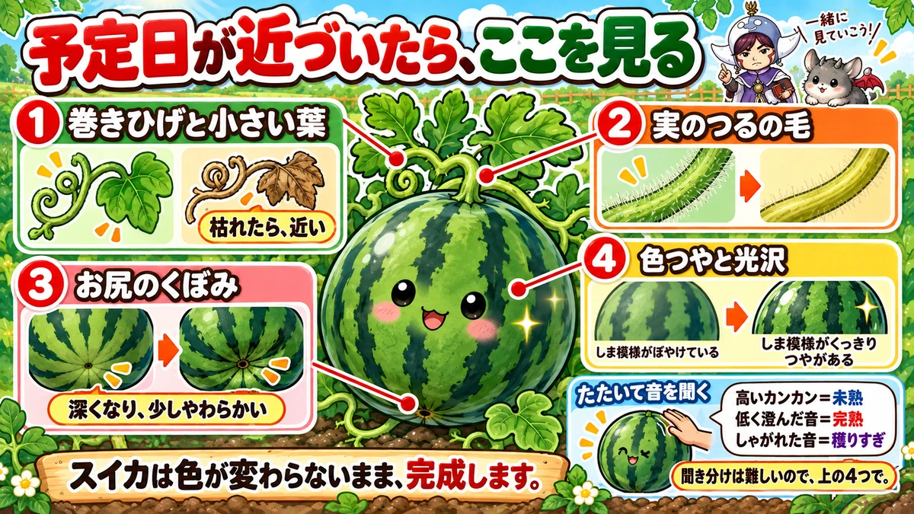

スイカ栽培の段取り帳｜つるの整理・受粉・収穫判断と失敗対策

どうも、8150（えいこう）です🌱 家庭菜園歴8年、理科の教員免許を持っていて、有機・無農薬で野菜を育てています。
📖 この記事の目次
この記事で分かること
- 育てる玉の大きさは、つるを置ける場所と収穫後の扱いやすさから選びます。
- 接ぎ木苗は土から広がる病気への備えになります。植えるときには接ぎ目を地上に残します。
- つるの本数と実の数を先に決め、株の勢いを見ながら整枝と追肥を調整します。
- 受粉させた花には日付を残し、その後に実が育ち続けるか確認します。
- 収穫は品種の目安、経過した日数、巻きひげ、実の張りを組み合わせて考えます。
- 葉の異変や実割れは、症状から原因を分けて対応。肥料や水を足す前に調べることがあります。
スイカを育てるときは、『植える場所』『つるの育て方』『実を残す位置』『収穫の見込み』をつなげて考えると、作業が整理できます。実ができてから収穫日を考えるより、花が咲いた時点で記録を始める方が判断しやすいんですよね🍉
このページは、始める前の計画にも、畑で困ったときの調べ物にも使える段取り帳です。植え付け前なら次の早見へ。葉ばかり広がる、実が黄色くなる、そろそろ収穫したいという方は、該当する手順や症状を選んで読んでください。
数字には幅があります。たとえば、大玉の収穫は40〜45日という説明も、50日ほどという説明もあります。どちらかを消して一つにすると、天候や品種による違いが見えなくなります。みなさんの苗の表示を先に確認し、このページでは条件の違いまで一緒に見ていきましょう。全部を覚える必要はありません☺️
早見：スイカの育て方（ひと目で分かる数字）
計画に使う時期・広さ・本数
- 種からの開始：保温して2月に育苗を始める動画の例と、3月中旬〜下旬から早めに準備する動画の例があります。全国一律の種まき月にはせず、地域と苗を植える予定日を確認します。
- 植え付けの推奨時期：4月中旬〜5月上旬の例があります。梅雨の前に株を育て、受粉できる晴れ間を使う計画です。遅霜や低温の心配が残る場所で、月だけを見て植えません。
- 植え付け可能な終わり：暖地5月末、中間地6月中旬、涼しい地域6月末という農家への聞き取り例があります。おすすめの開始時期とは別の数字です。遅植えでは収穫までの期間を確保できるか考えます。
- 地面へつるを広げる大玉の場所：約3m×3mを見込む説明があります。囲いの中へつるを戻す方式では約4㎡という説明もあり、同じ栽培法の数字ではありません。
- 株間：材料には、すべての仕立てに共通する株間の指定はありません。苗の表示を確認し、株元の間隔と、つるを広げる面積を別々に確保します。
- うねの形：直径約60cm、高さ20〜30cmの丸く高めたうねを使う動画の例があります。普通の長いうねの幅を示す数字ではないので、そのまま置き換えません。
- うね幅：共通の幅は材料から決められません。地這いか空中栽培か、排水と観察の通路をどう取るかで計画します。
- 植え付け前の準備：元肥は3週間以上前、うねと地面を覆う準備は約2週間前までに済ませる説明があります。肥料の入れ方が違う例を組み合わせて、量まで足し合わせないようにします。
- 苗の本葉：本葉3〜4枚まで育てて植える計画と、本葉5枚前後の苗を選ぶ説明があります。苗の健康状態と植え時を合わせて見ます。
- 親づるの摘芯：中心となる目安は本葉5〜6枚。動画によって4〜5枚、5枚、5〜7枚、6枚という違いがあります。子葉と初生葉を区別して数えます。
- 伸ばす子づる：3本、4本、2〜4本という説明があります。残す果数と苗の力に合わせて選ぶため、『何本でも増やしてよい』という幅ではありません。
- 目標の果数：自根苗で2果、接ぎ木苗で3果を目指す仕立て例があります。標準収量の保証ではなく、その本数のつるを使う計画です。子づる1本に1果を残す考え方が基本候補になります。
- 受粉させる位置：二番花以降をねらう説明が中心。10葉目前後、12節前後、13〜18節、14節や21節という違いがあります。最初の雌花を一律に残すより、葉が育った位置を選びます。
- 人工授粉の時刻：晴れた朝の早い時間。午前9時30分ごろまで、午前10時ごろまでという動画の目安がありますが、真夏はさらに早く、冷えた朝は花粉が出るのが遅いことがあります。
- 追肥の区切り：子づるが約50cmの頃と、実が卵大〜ソフトボール大の頃に行う2回の例があります。一番花の頃に株の勢いが弱いときだけ初回を行う方法もあり、毎回必ず足す意味ではありません。
- 収穫までの期間：受粉を起点に、小玉30〜40日または35〜40日、大玉40〜45日、40〜50日、45〜50日または50日という説明があります。品種と天候で違います。
- 積算温度：小玉700〜800℃、大玉950〜1000℃、別の大玉栽培では1200℃という動画の説明があります。必要な温度は品種によって違うため、品種共通の確定値にはしません。
- 玉直し：生育中に3回ほど行う説明と、2〜3回という説明があります。実の向きを変える作業ですが、回す角度や日数の間隔を一律には決めません。
- 連作の間隔：同じ場所へウリ科を続けない計画にします。材料には共通する輪作年数がありません。『何年あけたら必ず大丈夫』とはせず、前作と病気の履歴を確認します。
数字を見る前に決めたい3つ
最初は『大玉を地這いで育てる』『小玉を地這いにする』『小玉を支柱とネットへ誘引する』に分けます。大玉の広さだけを見て小玉の支柱栽培を計画したり、小玉の扱いやすさだけで大玉を吊ったりすると、必要な場所と支えがずれてしまいます。
次に、収穫した実をどう食べるか考えます。大きなスイカは見ていて楽しいですが、冷蔵庫へ入るか、家で扱える大きさかも選ぶ材料です。畑では収まったのに台所で困る、という予定にはしたくないですね。
最後に、苗からか種からかを選びます。種からなら保温して育てる期間が必要です。苗を買う場合も、購入した日に畑の準備が終わっている方が進めやすくなります。苗の入手、土の準備、霜の心配が減る時期を、同じ予定に並べてみてください。
- 育てる大きさと、地這い・空中栽培のどちらかを決めた
- 苗の表示で地域の適期と収穫目安を確認した
- つるを伸ばす場所と、見回る通路を分けて取った
- 前作と、土に残っていそうな肥料を確認した
- 受粉日と実の位置を記録する準備をした
作業の手順（時期の順）
1．場所を決めて、収穫までの時間を確保する
- 日がよく当たり、雨のあとに水が残りにくい場所を選びます。
- 大玉なら地面へつるを広げる計画を立て、小玉なら支柱栽培も候補にします。
- 前作がスイカやほかのウリ科だったか、土から広がる病気が出ていたか確認します。
- 地域と品種の植え時を調べ、受粉後に実が育つ期間まで予定へ入れます。
- 後作も考える場合は、スイカの撤去と次の種まきが重ならないか確認します。
空いている株元の面積だけで判断すると、後から通路へつるが出てきます。実ができてから場所を替えるのは扱いが難しくなるので、最初からつるを置く方向まで考えておきます。みなさんが実の近くへ歩いて行ける通路も、栽培する場所の一部です。
省スペースの大玉栽培には、囲いの内側へつるを戻す方法があります。ただ、狭くすれば自然に収まるわけではありません。つるを確認して動かす作業が増えます。広い地這い栽培の面積を、ただ削った方法として扱わないでください。
遅く植える場合は、苗が育つ時間に加え、花が咲いてから収穫までの期間が必要です。大玉で受粉後40〜50日かかる目安を使うなら、植えてから40〜50日で食べられる計算にはなりません。日数の起点を確認するだけで、計画の勘違いを減らせます。
2．排水を整え、元肥を入れすぎない
- 雨のあとにぬかるむ場所を調べ、水の逃げ道を作ります。
- 水分が多い土なら、株元を高くしたうねを検討します。
- 前作に入れた肥料と、前作の葉やつるの勢いを振り返ります。
- 元肥は植える前に余裕を持って準備し、使用する肥料の表示に従います。
- 肥料を土全体へ混ぜる方法と、株の下へ入れる方法を区別して採用します。
元肥は、栽培を始める前に入れる肥料です。スイカでは『実を大きくしたいから、最初から多め』がうまくいかないことがあります。葉とつるが旺盛になる一方、雌花や実がつきにくくなる状態を、つるぼけと呼びます。
肥料を追加していない畑でも、前作の残りが効く場合があります。いま袋から入れた量だけで土の栄養を判断できないんですよね。前年や前作で何を入れたか、分かる範囲でメモを見直してから量を考えます。
丸く高めるうねには、直径約60cm、高さ20〜30cmという例があります。これは株元を高くする形で、その周囲へつるを伸ばす場所も必要です。うねの直径だけで1株の場所が足りる、という説明ではありません。
材料では元肥の種類や単位が異なり、不鮮明な数量もあります。そのため、ここではいくつもの配合を合体した処方を置きません。使う肥料を決めたら、その製品の使い方と、畑に残る肥料を合わせて確認してください。
3．健康な苗を選び、根鉢を崩さず植える
- 葉や葉裏に虫がいないか、株元がぐらつかないか調べます。
- 葉と葉の間が不自然に間延びしていない苗を選びます。
- 土の表面の苔や、底穴から伸びた根を確認し、苗の状態を比べます。
- 植える前にポットの土へ水を行き渡らせます。
- ポットから抜くときには根と土のまとまりを保ち、植え穴へ置きます。
- 接ぎ木苗なら接ぎ目を埋めず、土を強く押して根を傷めないようにします。
- 植えたあとに水を与え、苗と周囲の土がなじむようにします。風で動くなら支えを設けます。
根鉢は、苗の根が土を抱えたまとまりのことです。ほぐしてから植えたくなるかもしれませんが、スイカでは崩さず扱う手順を選びます。地上の葉を元気にしたいときほど、見えない根を乱さないことが出発点になります。
接ぎ木苗は、別の植物の根を持つ部分へスイカをつないだ苗です。つないだ位置を接ぎ目と呼びます。土から広がる病気への備えや低温期の生育を助ける目的で使いますが、病気をすべて防ぐ苗という意味ではありません。
植える深さと、接ぎ目を折らない扱いを確認してください。見た目を安定させようと深く埋めるより、接ぎ目を地上に残して支える方を選びます。苗の説明書に植え方があれば、それも一緒に読みましょう。
ネギの根を近づける混植は、土から広がる病気を抑えるねらいを持つ方法です。根の近くにいる微生物の働きを利用します。ただし発病後の治療ではなく、効果の程度もこの材料では確定できません。接ぎ木苗や場所選びを省く理由にはしないでください。
4．植え付け直後の低温と雨へ備える
- 根付くまでの水分を確保し、植え付け直後の乾きに注意します。
- 低温や雨を避ける必要がある時期は、ビニールのトンネルを設けます。
- トンネルは毎日の気温に合わせて裾を開け、風が通るようにします。
- 地面に触れる枯れ葉や、混み合って湿り続ける部分を見回ります。
- 花が咲き始めたら、花が雨で濡れないか、受粉を助ける虫が入れるかも見ます。
雨を避けたいからと閉め切ると、内側が蒸れます。株元をぬらさないことと、空気を動かすことを両方考えます。晴れて気温が上がる日には、朝の寒さを理由に同じ閉じ方のまま置かないようにしてください。
トンネルの裾を10〜20cm開ける例と、20〜30cmほど開ける例があります。気温や設置方法が違うため、数字だけで開け幅を固定しません。霜の心配がある日と、暖かい日とでは条件が変わります。周囲の天候と内側の蒸れを見て調整します。
枯れた下葉を整理する作業と、元気な本葉を減らす作業も区別します。葉を少なくすれば病気が消える、という話ではありません。子葉や初生葉を切る栽培例もありますが、初心者の必須作業にはせず、まず雨と風通し、傷んだ部分の確認から進めます。
5．親づる・子づる・孫づるを見分ける
- 株の中心から伸びる主なつるを親づるとして確認します。
- 親づるから枝分かれするつるを子づるとしてたどります。
- 子づるからさらに出る枝を孫づるとして区別します。
- 親づるを止める方式か、親づるも伸ばす方式かを決めます。
- 伸ばすつるが絡んだら、無理に引き抜かず、付け根から順に見直します。
名前が似ているので、最初はこんがらがりますよね。大丈夫です。株元から一本ずつたどれば、どこから枝分かれしたか分かります。葉の多さだけを見て切る前に、『これは残す子づるやな』と確認できる状態にしておきます。
摘芯は、つるの先の生長点を取り、そこで伸びるのを止める作業です。親づるを止めて子づるを育てる方法では、本葉5〜6枚が中心の目安です。芽を止める場所は戻せないので、葉の種類と枚数を確かめてから進めてください。
親づるを止めない方式もあります。親づると子づるを合わせて3本、2果を目標にする例です。親づるを伸ばす説明を読んだ後に、途中で摘芯方式の作業を足すと計画が変わります。どちらかの方式で本数と果数をそろえて考えましょう。
6．残すつるを決め、切りすぎを避ける
- 摘芯方式なら、勢いのよい子づるを選びます。
- 3本を基本にするか、4本を伸ばすか、採用する仕立てを決めます。
- 4本で3果を目指す方法なら、1本は実をつけないつるとして残します。
- 混み合う場合は、予定の着果位置と株の勢いを確認します。
- 必要なら着果位置より株元側の孫づるを整理し、すべてを機械的に取りません。
実をつけない『遊びづる』は、不要だから残っている枝ではありません。葉を育てて株を支える役目を見込んだつるです。つる4本なら実も4個、と本数だけで目標を決めない理由がここにあります。
孫づるを放任する説明も、着果位置まで整理する説明もあります。株の勢いが普通なら、全部を切り続ける必要がない方法を選べます。葉とつるが密集して実がつきにくい場合には、着果位置より手前を整理する選択肢があります。
ただ、切り口が増えるほど株への負担も増えます。勢いが強いからと、その場で大量に切ってしまう方法にはしません。孫づるを取るか迷ったら、まず追肥を続けていないか、前作の肥料が残っていないかも見ます。枝だけに原因を求めないことが大切です。
7．雌花を見つけ、残す位置を選ぶ
- 花のすぐ下に、小さな実のようなふくらみがあるか見ます。
- ふくらみがある花を雌花、ない花を雄花として分けます。
- 残すつるの株元から葉の付く位置をたどり、雌花の位置を確認します。
- 株元近くの最初の雌花だけを本命にせず、二番花以降を候補にします。
- 苗の力と残す果数を考え、育てたい花を決めます。
花の下がすでに丸いと、「実ができた！」と思いますよね。そのふくらみは雌花を見分ける目印ですが、受粉に成功した証拠ではありません。花が咲いた段階と、実が育ち続ける段階を分けて観察します。
最初の雌花を避ける説明には、まだ葉が少ない位置では実が小さくなったり、形や中身が安定しにくかったりするという理由があります。ただし、何節なら必ず成功するとは決められません。葉が育った位置を選ぶ考え方を先に押さえ、節数の違いは後ろの章で比べます。
実の数を増やしたくても、子づる一本へいくつも残すと株の負担が変わります。まず一本に一果を残す計画を候補にし、苗や仕立てに合う総数を見ます。小玉で多く収穫できる個別例を、大玉にもそのまま使わないようにしましょう。
8．花粉を確かめて人工授粉し、日付を残す

- 晴れた朝に雄花と雌花を見つけます。
- 雄花を軽く指などへ触れさせ、花粉が出ているか確認します。
- 雄花の花びらを外し、花粉の付く部分を出します。
- 雌花の中心にある柱頭へ、花粉をそっと付けます。強くこすりません。
- 複数株あるなら、別株の雄花を使う方法も候補にします。
- 作業した日と実の位置を記録します。
- その後も同じ実を見て、黄色くならずに大きくなるか確かめます。
柱頭は、雌花が花粉を受け取る部分です。細かい言葉を暗記するより、雄花から雌花へ花粉を移す作業だと分かれば進められます。花粉が出ていないのに形だけこすっても、受粉の条件は整いません。
時刻は朝の目安ですが、季節で変わります。真夏には午前10時では遅い場合があり、冷えた春の朝や曇りの日は、その頃に花粉が出始めることもあります。時計を見ることと、花粉を見ることをセットにしてください。
札には『授粉した日』を残し、自然受粉なら『初めて実の肥大を確認した日』と区別して記録します。発見日を正確な受粉日として計算しないためです。実の近くに目印を置くと、葉の下へ隠れても探しやすくなります。
自然受粉を助ける訪花昆虫も働きます。花へ来る虫を一律に追い払うと、その働きを減らすことがあります。葉を食べる虫や葉裏の害虫を見つけた場合は別に対応し、『花の虫を守る』ことと『害虫を放置する』ことを混同しないようにします。
9．着果を確認し、実の下と支えを整える
- 受粉後の小さな実が育ち続けるか見ます。
- 黄色くなったものと、順調に膨らむものを区別します。
- 地這いなら、実が小さいうちに台座へ載せる計画を立てます。
- 台座の上に水がたまらないか、実の重さを支えられるか確認します。
- 空中栽培の小玉は、果実を支える袋や受けを別に設けます。
- 実や付け根を引っ張らず、実そのものを支えて扱います。
鶏卵ほどの大きさになる前には、途中で実が落ちる場合があります。授粉した直後に成功を確定せず、育ち続けるか見てから残す果数を調整します。候補が複数ある段階と、最後に育てる数を決めた段階を分けると判断しやすくなります。
台座は、果実が湿った地面へ触れ続けるのを減らすためのものです。具体的な材質より、排水と安定を確認します。下に何か敷けばよい、と水のたまる受け皿へ置くと、地面から離した目的が薄れてしまいます。
大きくなった実を動かすとき、つるを持って持ち上げるのは避けます。実の重さが付け根へ集中するからです。実を支え、つながる部分に無理がかからない範囲で動かします。空中栽培でも、つるだけに果実の重さを任せないようにしてください。
10．肥大中の水分と追肥を確認する
- 植え付け直後の水やりと、根付いた後の管理を分けます。
- 畑では毎日同量を与える前に、土が乾いているか、水が残っているか見ます。
- 葉とつるが過剰に伸びているなら、追肥を急ぎません。
- 採用した方法に合わせ、子づるの生長期や実の肥大開始期に追肥の必要性を判断します。
- 収穫が近づいたら、乾燥のあとに急な多量の水を与える管理を避けます。
スイカは多少の乾燥に耐えるという説明があります。でも、それを『どんな状態でも水は不要』と読み替えないでください。根付く前、株が極端な乾きで弱っているとき、収穫間際では条件が違います。ここでは通常の地植えの話を、容器栽培の水管理へそのまま移しません。
追肥を行う方法では、実が育ち始める時期が重視されます。一方、花が咲く前後の初回は、株の勢いを見て省く説明もあります。葉が茂りすぎる株へ『予定日だから』と足すと、つるぼけを助長する場合があります。
肥料の数量は製品や元肥の量で変わります。異なる肥料の体積と重さを置き換えたり、一つの動画の量を別の製品へ当てはめたりしません。株の勢い、実の数、土の履歴を確認した上で、使用する肥料の表示に合わせて考えます。
11．玉直しと、仕上げ時期の保護をする

- 地面に接する側と、上側の色や形を確認します。
- 実と付け根を支え、向きをゆっくり変えます。
- 3回ほど、または2〜3回という栽培例を参考にし、何度も触り続けません。
- 猛暑で強い直射日光が続く場合は、実の光を薄く和らげる対策を検討します。
- 雨の予報と土の状態を確認し、雨よけは換気や排水と合わせて設けます。
- 実が狙われる前に、鳥や獣へ備える囲いを確認します。
玉直しは、果実の向きを変え、光の当たり方の偏りを減らす作業です。地面に当たっていた面が黄色い場合には、その面を確認しながら扱います。形や色づきを整えるねらいがありますが、回せば甘さが保証されるとは考えません。
通常の光を確保することと、猛暑時の強い日差しを和らげることは、別の場面の対応です。薄く光を遮る対策はありますが、実も葉も完全に暗くする方法ではありません。光が必要だからと、暑い時期も無条件にむき出しへする説明にはしないでください。
雨よけを設けても、周囲の土から入る水まで全部なくせるとは限りません。果実へ直接雨を当てないこと、土の排水、乾燥後の急な吸水を分けて見ます。屋根だけ付けたら実割れの原因がすべて消える、という期待にはしません。
12．候補期間に入ったら、複数のサインを重ねる

- 苗の表示と授粉記録から、収穫の候補期間を出します。
- 実の付いている節へ戻り、その節の巻きひげを確認します。
- 株全体に病気や枯れ込みがないか調べ、成熟による枯れ方か考えます。
- 実の肩の張り、つや、縞の境目や表面の凹凸を見ます。
- へたの細かい毛や、お尻のくぼみの変化も補助にします。
- 音を見る場合は同じ実を軽く叩き、以前との違いを比べます。
- 猛暑や長雨の影響も合わせ、日付だけで収穫を決めません。
巻きひげは、つるがほかのものへ絡み付く細い部分です。どこか一つが枯れていればよいのではなく、実の付く節を特定します。前後の節の巻きひげを見ていると、違う場所の変化を果実の成熟へ結びつけてしまいます。
肩は、へたに近い実の上部です。収穫候補では張りやつやが出るという説明があります。縞の見え方や表面の感触も合わせると、単に『大きくなった』より観察する場所が明確になります。強く押したり、何度も持ち上げたりして傷を作らない範囲で見てください。
音は、低ければ低いほどよいという指標ではありません。未熟な軽い音から変わる説明と、低く濁った音は熟しすぎの可能性がある説明があります。初めての一打で中身を当てるより、同じ実の変化を追う補助にします。
収穫後に置いて甘さを仕上げるつもりで、早く採る方法は避けます。スイカは収穫後の追熟で甘さを増すことを期待しにくい作物です。外から中身が全部見えるわけではないので、日付と複数のサインを積み重ねて判断します。
13．終盤の実を選び、片付けと後作へ移る
- すでに育っている実と、終盤に咲いた花や小さな実を分けます。
- 新しい実に必要な成熟期間が、残りの栽培期間へ収まるか考えます。
- 間に合いにくい実やつる先を整理する方法を検討し、大きな実へ育ちを向けます。
- 収穫が終わった不要なつるを片付けます。
- 病気が疑われる葉やつるを畑へ置きっぱなしにしません。
- 根も確認して取り除き、次の野菜の種まき適期と土の準備を合わせます。
終盤に咲いた花を残せば、必ず収穫が増えるとは限りません。受粉から成熟までの時間が必要だからです。つる先を止め、小さな実を整理する栽培例は、何日後まで育てられるかを見て採用します。
後作にはニンジン、大根、ほうれん草、白菜、キャベツなどの候補があります。ただ、スイカを片付けた日なら何でもまけるわけではありません。ニンジンを早く始める案と、土の準備を挟んで秋冬野菜へ進む案を、地域の適期に合わせて選びます。
次も地這いきゅうりにするなら、同じウリ科が続く点を確認します。場所に余裕があるときは替える方を候補にしてください。収穫の記録と病気の履歴を残せば、翌年の場所選びにも使えます。
失敗の見分け方（症状→原因→やること）
葉とつるは増えるのに、雌花や実が少ない
- 症状：株が旺盛に広がり、葉が混み合う一方で、育つ実が少ない状態です。
- 考えられる原因：肥料が多い、前作の残りが効いている、孫づるが密集するなど、つるぼけの可能性があります。
- やること：追肥をいったん見送り、残す子づると着果位置を確認します。必要な場合に株元側の孫づるを整理します。
花が少ないから花のための肥料を足そう、と考える前に、葉とつるの勢いを見てください。栄養不足とは逆の状態かもしれません。生長している部分が何かを分けると、追加の肥料が必要か判断しやすくなります。
枝を減らす場合も、残す本数と果数を先に確認します。実の先の葉まで一気に取る作業にはしません。切る作業と施肥の見直しを同時に大きく変えるより、どこが混み合っているかを特定して進めます。
雌花は咲くのに、その後の実が育たない
- 症状：花の下に小さなふくらみはあるものの、実の肥大が続きません。
- 考えられる原因：花粉が出ていない、花が雨でぬれた、雄花と雌花の開花が合わないなど、受粉条件の不足を考えます。
- やること：晴れた朝に花を確認し、花粉が出る雄花を使って人工授粉します。授粉した花を記録して経過を追います。
朝に作業した事実と、花粉を付けられたことは同じではありません。冷えた朝なら、時刻だけを守っても花粉がまだ出ない場合があります。雄花に触れて確かめる一手間を、授粉作業に含めてください。
この症状だけで、肥料不足と決めることも避けます。葉の勢いが強い株なら、つるぼけを合わせて見る必要があります。花の状態と株の状態の両方から考えましょう。
小さな実が黄色くなり、落ちてしまう
- 症状：受粉後の候補果が膨らまず、黄色くなったり落ちたりします。
- 考えられる原因：受粉がうまくいかなかった可能性があります。卵大に達する前の実は、途中で育たなくなる場合があります。
- やること：ほかの候補果が育ち続けるか観察し、次に咲く適した位置の雌花で受粉条件を確認します。
一つの候補が落ちても、株全部の栽培を失敗と決める必要はありません。残す予定のつるに、次の雌花があるか見ます。一方、最初の実が丸く見えただけで、ほかの候補を全部外すのも早い判断です。
成功を確定する日数は、この材料では一律に決められません。『授粉して何日だから成功』という区切りを作らず、色と大きさの変化を追います。札の記録と、実際の生長を組み合わせてください。
株元近くの実が小さい、形が整わない
- 症状：最初に残した実が育ちにくい、形が悪い、切ったら中に空洞がある場合です。
- 考えられる原因：十分な葉が育つ前の、株元に近い一番花を残した影響が考えられます。症状一つで原因を確定はしません。
- やること：次の実では、二番花以降の候補と葉の育ちを確認し、残す位置や果数を見直します。
『早く実が付いたから得やな』と思いたくなる場面です。でも、早さと中身の充実は同じ目標ではありません。最初の花を避ける方法には、葉が育った位置で実を太らせるねらいがあります。
空洞は切って初めて分かることもあります。外から見ただけで空洞果と断定する診断にはしません。収穫後の結果を授粉日や着果位置と一緒に残し、次の栽培で比較する材料にします。
植えたあとに苗が安定せず、伸びが悪い
- 症状：苗がぐらつく、接ぎ目が不安定、植えた後の生育が進まない状態です。
- 考えられる原因：植え付け時の根鉢の崩れ、接ぎ目の傷み、風による動き、低温や過湿などを確認します。
- やること：植えた深さと支え、土の湿り、保温と換気を調べます。生育の遅さだけを見て追肥しません。
地上で伸びない変化が見えても、原因が葉にあるとは限りません。根や接ぎ目を傷めた可能性がある場合に、肥料を増やして解決するとは考えないようにします。
材料には、しおれた株を見た目だけでつる割病と断定する手順はありません。過湿や傷みを確認しても不調が続く場合は、写真と栽培履歴を残して相談する方が判断につながります。接ぎ木苗だから病気ではない、と決めることも避けてください。
接ぎ目より下から、別の形の葉が伸びる
- 症状：接ぎ木苗の根元側から、スイカとは違う芽が伸びてきます。
- 考えられる原因：根を受け持つ台木側の芽が育っている可能性があります。
- やること：芽の出る位置を確認し、台木側なら早めに取り除きます。接ぎ目とスイカ側のつるを傷めないようにします。
葉の数が増えたと喜ぶ前に、どちらから出た芽か見ます。台木側の勢いが強くなると、育てたいスイカとは違う方へ生長が進みます。株元の確認は、苗の時期だけで終わらせない作業です。
葉に黒い斑点や変色が増え、実にも広がる
- 症状：葉の縁や先に黒い変色があり、点状の傷みが増えます。実にも黒い症状が出る場合があります。
- 考えられる原因：炭疽病が候補です。雨による広がりや、トンネル内の蒸れを確認します。ただし黒い斑点だけで病名を確定しません。
- やること：傷んだ葉や不要な感染つるを畑から出し、株元への雨、泥はね、風通しを見直します。
雨滴が傷んだ葉から別の葉や実へ飛ぶと、広がりを助けることがあります。葉を外すだけでなく、雨が当たり続ける条件を減らす対策も必要です。取り除いた葉を株のすぐ横へ置く方法にはしません。
炭疽病とほかの病気を確実に区別する診断表は、材料にはありません。広がりが止まらない場合は、葉表・葉裏・つる・実の写真を残し、どこから症状が出たかも記録します。病名を当てることより、残る実へ広げない対応を先に進めましょう。
葉裏に小さな虫が集まり、アリが目立つ
- 症状：葉裏に虫の集まりがあり、その周辺をアリが歩いています。
- 考えられる原因：アブラムシが増えている可能性があります。アリが多いことを、受粉が進んでいる証拠にはしません。
- やること：葉裏を直接調べ、少ないうちに虫を取り除きます。葉を傷めないように扱い、その後も見回ります。
花へ来る虫と、葉裏の害虫は見る場所が違います。受粉を助ける虫を妨げない管理でも、葉裏の確認は続けてください。『虫は全部追い払う』『虫は全部残す』の二択にしない方が、スイカの状態に合う対応を選べます。
葉の食害が増え、ウリハムシが見つかる
- 症状：葉に食べられた跡が増え、葉の上や周囲にウリハムシがいます。
- 考えられる原因：成虫による食害を考えます。土に産んだ卵から育つ幼虫が、根や茎を傷める場合もあります。
- やること：見回りで虫を確認して取り、収穫後の不要なつるも早めに片付けます。
訪花昆虫を守りたい時期でも、葉を食べる虫まで放置する必要はありません。花の中を動く虫と、葉を食べている虫を分けて見ます。栽培の最後に残ったつるも、虫が集まる場所として確認してください。
葉裏が白っぽく、てかって見える
- 症状：葉裏の白っぽさや光り方が気になります。
- 考えられる原因：ハダニを疑う材料になりますが、色だけで確定はできません。肉眼では虫が分かりにくい場合があります。
- やること：葉裏を確認し、ハダニの対応として水で洗う方法を検討します。病気による斑点や湿りと混同しません。
葉裏へ水を当てる作業は、根へ水を与える作業とは目的が違います。葉裏の虫への対応をしたから、土も毎日ぬらし続ける必要がある、という話にはつなげません。雨の時期に黒い病斑が広がる株では、病気側の確認も合わせて行います。
巻きひげは枯れているのに、実の成熟が疑わしい
- 症状：収穫の目安より早い時期に巻きひげが枯れたり、株全体が弱ったりしています。
- 考えられる原因：成熟のほか、病気や株の衰弱で巻きひげが枯れた可能性があります。
- やること：授粉日へ戻り、実の肩、縞、へたの毛などを確認します。枯れた巻きひげ一つで採りません。
見るのは、実が付いている節の巻きひげです。それでも単独では判断できません。『どの巻きひげか』と『なぜ枯れたか』を分けて見ることで、病気の変化を収穫サインと取り違えにくくなります。
大きくなった実が割れる
- 症状：果皮へ亀裂が入り、実の中が露出します。
- 考えられる原因：収穫の遅れ、乾燥後の急な雨や多量の水、幼果期の傷、猛暑時の強い日差しを順に考えます。
- やること：授粉記録、最近の雨と水やり、傷の場所を見直します。残る実の収穫確認を早め、排水と雨よけ、実の扱いを改善します。
割れたら水不足、と一方向に決めると、その後の大量の水で条件を悪くする場合があります。乾燥が続いた後に急な雨があったか、収穫候補期間を過ぎていないかを先に確認してください。
亀裂がある実を食べてよいかは、この材料から判断できません。割れの原因説明と、食品としての安全判断は分けます。外側の亀裂が小さいという理由だけで、中身の状態を保証する説明にはしません。
説明が分かれていること
植えるのは春の早い時期か、初夏まで待てるのか
- Aという説明：動画の栽培計画では、4月中旬〜5月上旬の定植を勧めています。梅雨前に株を育て、晴れ間で受粉させるねらいです。
- Bという説明：農家への聞き取りでは、暖地5月末、中間地6月中旬、涼しい地域6月末まで植えられるという期限が示されています。
- どう考えればよいか：Aは進めやすい計画、Bは植え付けの終わりの目安です。低温への備えと、受粉後に確保できる期間を分けて考えます。
遅い時期まで植えられることと、遅い方が育てやすいことは同じではありません。逆に、推奨時期を過ぎたから全国どこでも終了、とも決められません。苗の地域別表示と残りの季節を確認して、花が咲いてからの日数まで予定に入れます。
大玉には約9㎡か、約4㎡か
- Aという説明：地面へつるを伸ばす動画では、約3m×3mの場所を見込みます。
- Bという説明：囲いを設け、伸びるつるを内側へ戻す動画では、約4㎡の省スペース法が紹介されています。
- どう考えればよいか：仕立てと日々の作業が違います。面積の平均を取らず、普通の地這いか、つるを戻す方式かを先に決めます。
小さい面積の数字だけを採用して、つるを広げる方法は大きい面積の説明を使うと、場所が足りなくなります。観察しやすさや風通し、果実に近づく通路まで含めて計画してください。
本葉何枚で親づるを止めるのか
- Aという説明：複数の動画で、本葉5枚または5〜6枚を目安に摘芯します。
- Bという説明：農家への聞き取りでは4〜5枚、別の動画では5〜7枚や6枚という例があります。
- どう考えればよいか：5〜6枚が中心となる候補ですが、葉の数え方と採用する仕立てをそろえます。子葉や初生葉を混ぜて枚数だけ合わせません。
初生葉を本葉数へ含めない説明があります。葉が出た順に何でも一枚と数えるより、苗の説明や形を確認して数えます。摘芯の場所を決める作業なので、不明な葉を含めて急いで切る必要はありません。
親づるの摘芯は必須なのか
- Aという説明：親づるを止め、子づるを3〜4本にする動画の説明があります。
- Bという説明：別の動画では、摘芯せず親づると子づるを合計3本伸ばし、2果を目指す方式も紹介されています。
- どう考えればよいか：摘芯方式を一つの標準候補とし、親づるを残す方式を別の計画として扱います。途中の作業だけを混ぜません。
親づるを残している株を見て、手入れ不足と決める必要はありません。どのつるへ何個の実を残す計画かが分かれば、方式の違いとして整理できます。名前より、残すつると果数の対応を見る方が実用的です。
子づるは3本か4本か、実は何個か
- Aという説明：動画には、基本3本に予備1本を合わせる形や、子づる3本で育てる形があります。
- Bという説明：4本を伸ばす形、あるいは2〜4本の範囲から選ぶ説明もあります。4本で3果なら、1本を遊びづるにします。
- どう考えればよいか：苗の力と果数が違います。自根苗2果、接ぎ木苗3果という目標の例を、すべての苗に保証された収量として使いません。
子づる一本に一果を残す説明がある一方、農家への聞き取りには多くても二果という話もあります。数を増やした場合には味や大きさが安定しにくい点も材料にあります。初めの計画では、一果の方法を候補にして株全体の負担を見ます。
孫づるは放置するか、取り続けるか
- Aという説明：家庭菜園向けの動画には、残す子づるを決めた後の孫づるは放任してよいという説明があります。
- Bという説明：別の動画では、着果する位置より株元側の孫づるを早めに取ります。過繁茂やつるぼけの場合に整理する説明もあります。
- どう考えればよいか：普通の勢いなら放任できる方法もあります。混み合いが強い株では、着果位置より手前を対象にする方法を検討します。
孫づるの切除は、必ず行う作業ではないという説明もあります。切り口が株の負担や病気の入口になるからです。取るか残すかを株の状態から選び、実の先にある枝まで同じ扱いで切りません。
受粉させる花は10葉目か、13節以降か
- Aという説明：農家への聞き取りは10葉目前後、動画では二番花が12節前後という説明があります。
- Bという説明：別の動画では13〜18節、または14節の二番花や21節の三番花を候補にします。
- どう考えればよいか：共通する考えは、株元に近い最初の花を避け、葉が育った位置を選ぶことです。節数を一つに断定せず、品種と仕立てに合わせます。
葉の枚数と、葉が付く節の位置は関連しますが、説明の数え方まで完全に同じとは限りません。数字の違いを全部誤りと決めず、『早さを優先する二番花』『大きさや食感を重視して三番花』という目的の差も残して考えます。
人工授粉は9時30分までか、10時を過ぎてもよいか
- Aという説明：晴れた日の午前9時30分ごろまで、または午前10時ごろまでという動画の目安があります。
- Bという説明：冷えた5〜6月の朝や曇りでは、10時以降に花粉が出る場合があります。真夏は10時では遅いこともあります。
- どう考えればよいか：晴れた朝の早い時間を候補にしつつ、雄花から実際に花粉が出るかを確認します。
時刻を守ったら受粉条件も整う、という関係ではありません。花粉の確認があることで、気温によるずれへ対応できます。作業できない日は訪花昆虫の働きを妨げず、実を発見した日と正確な受粉日を混同しない記録を残します。
追肥の初回はつる50cmの頃か、一番花の頃か
- Aという説明：農家への聞き取り動画で、聞き手が示す一般的な方法は、子づる約50cmと着果後の2回です。
- Bという説明：別の動画は、一番花の頃に株の勢いが弱い場合だけ花のための追肥をし、実が育つ時期の追肥を重視します。
- どう考えればよいか：初回の区切りに差があります。元肥の量と葉・つるの勢いを見て、省く判断も含めて計画します。
農家本人が固定の回数や量を処方した話と、聞き手が補足した一般論も区別します。材料では、生育を見ながら量を加減するという話があります。回数だけ抜き出して『必ず二回』としないことが、つるぼけへの対応にもつながります。
水を控えるのか、乾けば収穫前でも与えるのか
- Aという説明：通常の地植えでは頻繁な水やりを不要とする動画や、収穫約10日前から控える栽培法の説明があります。
- Bという説明：終盤でも土が乾燥しているなら水を補い、巻きひげが枯れて収穫間際になったら控える説明があります。
- どう考えればよいか：根付いた株か、極端に乾いて弱っているか、どこまで成熟しているかを分けます。完全な断水を共通ルールにはしません。
乾いた後に急な大雨を受けると、実割れにつながる場合があります。甘くしたいから極端に乾かす、割れたから大量に水を入れるという往復ではなく、急変を避ける管理を考えます。雨よけと排水も、水やりの量とは別に見てください。
玉直しは3回か、2〜3回か
- Aという説明：一つの動画では、生育途中に3回ほど向きを変えます。
- Bという説明：別の動画では2〜3回という目安です。頻繁に見られない場合に、初めから実をまっすぐ立てる簡略法もあります。
- どう考えればよいか：回数の例を残しつつ、実と付け根を傷つけないことを優先します。毎日回す作業にはしません。
簡略法は一つの動画の例で、すべての実に必要な置き方ではありません。角度や間隔の共通仕様も材料にはないため、具体的な度数や日数を足して説明しません。実の向きとつるの余裕を見て扱います。
よく日に当てるのか、猛暑には光を和らげるのか
- Aという説明：玉直しの動画では、実へ偏りなく光を当て、形や色づきを整える方法を紹介しています。
- Bという説明：実割れの動画では、35℃以上の高温と強い日差しが続く場面で、実への光を薄く和らげます。
- どう考えればよいか：通常の光の確保と、猛暑のピークへの対応です。どちらかを一年中の管理にせず、時期を分けます。
35℃という数字は一つの動画の目安で、気温を超えたら必ず割れる境界ではありません。実の傷や収穫の遅れ、水分の急変も見ます。葉まで全面的に暗くして、光を遮れば解決する方法にはしません。
大玉の収穫は40日か、50日か
- Aという説明：動画には40〜45日、40〜50日という受粉後の目安があります。
- Bという説明：別の動画では45〜50日や50日。小玉にも30〜40日と35〜40日の差があります。
- どう考えればよいか：品種、気温、日照の違いを残し、苗の表示を優先します。目安の期間へ入ったら、実とつるの変化を確かめます。
長雨や日照不足で成熟が遅れる実例も、猛暑で急に進む説明もあります。『大玉は何日』と一点に決めると、どちらの年にも合わせにくくなります。候補期間として持ち、観察する時期を決めるために使います。
積算温度は1000℃か、1200℃か
- Aという説明：動画には小玉700〜800℃、大玉950〜1000℃と読める説明があります。別の動画でも大玉約1000℃が示されます。
- Bという説明：別の大玉品種を育てる動画は1200℃を目安にします。必要な積算温度は品種で違うので、種袋や苗の札の表示も確かめます。
- どう考えればよいか：品種共通の数字へまとめません。温度で日数が変わる考え方の例として扱い、使う品種の表示を確認します。
ここから大きく外れた数字を見かけたら、まず品種の表示と見比べてください。食い違う説明を知っておくことと、確かめられない数字を目安に使うことは分けます。
鈍い音は食べ頃なのか、熟しすぎなのか
- Aという説明：動画では、未熟な軽い高音から、適熟になると鈍い低音へ変わると説明します。
- Bという説明：別の動画では、低く濁った音が熟しすぎの可能性を示します。
- どう考えればよいか：音は段階的に変わる補助情報です。同じ実の以前の音と比べ、日数と外観を合わせます。
『低い』『鈍い』は、文字だけでは境目を共有しにくい言葉です。聞き慣れていない一打を、唯一の収穫条件にはしません。音の違いを覚える場合も、実を傷めるほど強く叩く必要はありません。
収穫後の保存日数を決めてよいか
- Aという説明：保存できる日数には、はっきり決まった目安がありません。
- Bという説明：後半には、一つの動画の『涼しい場所で保存し、一週間以内に食べる』という説明があります。
- どう考えればよいか：一つの栽培動画の話を、すべての温度や果実の状態に使える安全な期限へ広げません。このページでは保存日数を固定しません。
丸ごとの実と、切った実では条件も違います。ここで確認できるのは、家庭で扱いやすい大きさを品種選びの段階で考えることまでです。追熟しない話も、『長く置いてよい』という保存の説明へつなげないようにします。
よくある質問
初めてなら大玉と小玉、どちらを選びますか
場所と収穫後の扱いから選びます。小玉は支柱栽培も候補になり、大玉は地面へつるを広げる計画が中心です。冷蔵庫へ収まる大きさかも確認しておくと、収穫後の予定までつながります。
小さな庭でも大玉を作れますか
囲いの中へつるを戻す省スペース法の例があります。ただ、通常の地這いとは手入れが違い、狭い場所へ植えるだけでは成立しません。通路と風通しも確保できるか見てから選びます。
プランターの土量はどれくらい必要ですか
材料には容器容量や土量を確定できる説明がありません。小玉の空中栽培が向くことと、どんな容器でも育つことは分けます。容器栽培の具体的な条件は、選ぶ品種の説明などで別に確認してください。
接ぎ木苗なら連作を続けてよいですか
土から広がる病気への備えになりますが、続けて植えてよい保証ではありません。同じウリ科が続かない場所を候補にし、病気の履歴を見ます。接ぎ目を埋めない植え方も必要です。
ネギを一緒に植えたら、病気の株は治りますか
混植は、根の周辺にいる微生物の働きを利用して病気のリスクを抑えるねらいです。発病後の治療を示す材料ではありません。不調が出た株では、症状と排水、接ぎ目、栽培履歴を調べます。
親づるを切り忘れたら、もう育ちませんか
親づるを残す仕立てもあります。まず親づると子づるを含む本数、残す実の計画を確認します。摘芯方式の数字だけを見て、育ったつるを慌てて切らなくても大丈夫です。
孫づるはすべて取る方がよいですか
放任できる説明もあります。つるぼけや混み合いが強い場合は、着果位置より株元側を整理する方法が候補です。切り口が増える負担もあるため、すべての株に同じ切除を課しません。
最初に見つけた雌花を残してよいですか
株元近くの最初の花は、小ささや変形、空洞の懸念から避ける説明があります。二番花以降と、十分な葉が育った位置を候補にしてください。適する節数は仕立てや品種によって違います。
花の下が丸くなったら、受粉成功ですか
丸いふくらみは雌花を見分ける特徴で、成功の証明ではありません。その後に実が肥大し続けるか確認します。卵大になる前には落ちる場合があるので、候補を早く一つに決めすぎないようにします。
人工授粉は同じ株の雄花ではできませんか
材料には、複数株なら別株の雄花を使う方法があります。ただし同じ株では成功しないという説明ではありません。花粉が出ているか、雌花の状態はどうかを先に確認します。
朝10時を過ぎたら授粉は無意味ですか
冷えた朝や曇りの日には、その頃から花粉が出る場合があります。真夏はもっと早い時間が必要な場合もあります。時計だけで判断せず、雄花の花粉を確かめてください。
虫に任せる場合も、日付を記録できますか
実の肥大を見つけた日は記録できますが、正確な受粉日と同一にはしません。札へ記録の意味を添え、収穫判断では外見の変化も重視します。訪花昆虫を一律に追い払わない配慮も続けます。
アリが多い株は、受粉がよくできていますか
アリの数だけでは分かりません。葉裏にアブラムシが増えていると、周辺にアリが目立つ場合があります。花の訪問と葉裏の害虫を分けて調べ、実が育つか確認します。
実をたくさん残すほど収穫量が増えますか
付けすぎると大きさや味が安定しにくくなり、株の負担も増えます。子づる一本に一果という計画が候補です。接ぎ木か自根か、つるの本数、玉の大きさに合わせて総数を考えます。
葉がよく伸びる株にも追肥は必要ですか
つるぼけ気味なら追加を急ぎません。初回の追肥を株の勢いが弱い場合だけ行う方法があります。実が肥大する時期の必要性と分け、前作の残肥や元肥も確認してください。
畑では毎朝水やりをしますか
根付いた通常の地植えでは、頻繁な水やりを不要とする説明があります。植え付け直後や極端な乾燥は別に考え、土の状態を見ます。容器栽培にも同じ頻度を当てはめる話ではありません。
収穫前に完全に水を切ると甘くなりますか
収穫前に水を控える方法はありますが、完全な断水を共通の手順にはしません。乾燥後の急な雨や吸水は実割れにつながる場合があります。株の状態と成熟段階を見て、水分の急変を避けます。
台座は大きくなってから入れてもよいですか
小さいうちに準備すると扱いやすいという説明があります。遅れた場合は実そのものを支え、つるを引いて持ち上げません。台座の排水と安定も確認します。
地面側が黄色い実は、育っていないのですか
地面へ接した側は光の当たり方が違い、黄色くなる場合があります。その色だけで未熟と決めず、日数とほかのサインを見ます。玉直しをする場合も、実と付け根を傷めない範囲で扱います。
巻きひげが枯れたら、その日に収穫しますか
病気や株の衰弱でも枯れるため、単独では決めません。実の付く節を確認し、授粉日、肩の張り、縞、へたの変化も合わせます。株全体の不調なら、成熟以外の原因を調べます。
受粉日を忘れた実はどう判断しますか
正確な日数の計算はできません。実の肩や縞、実の節の巻きひげ、へたなどを組み合わせて観察します。発見日を受粉日として扱わず、分かる日付と分からない日付を区別してください。
叩いて低い音がすれば、必ず食べ頃ですか
適熟に近づく低音と、過熟を疑う低く濁った音の説明があります。一度だけの音では境目が難しいため、同じ実の変化を補助にします。日付と外観が判断の土台です。
早く採って、家で熟すのを待てますか
スイカは、収穫後に甘さを増す追熟を期待する作物ではありません。畑で適熟を判断して採る計画にします。収穫を早めることを、実割れ対策の万能な方法にしないでください。
実が割れたら、残りもすぐ全部採りますか
実割れの原因と、残る実の成熟度を分けて確認します。猛暑による収穫の遅れなのか、急な雨や傷の影響なのかを調べます。まだ未熟な実まで一律に採る判断にはしません。
収穫後は何日保存できますか
温度や果実の状態をまたいで使える保存日数は、この材料から決められません。一つの動画の目安を安全な期限へ置き換えず、早めに食べる予定と扱える玉の大きさを、栽培前から考えてください。
スイカの後には何を育てればよいですか
ニンジン、大根、ほうれん草、白菜、キャベツなどが候補です。撤去時期と地域の種まき適期を合わせ、土の準備期間も入れます。同じウリ科を続ける場合は場所を替えられるか確認します。
学ぶ：スイカのしくみ🔬
温度の合計で、生育の進み方を考える
積算温度は、ある起点から温度を足し合わせて生育を考える目安です。この材料では、受粉後の日平均気温を足して収穫の見込みを立てます。同じ日数が過ぎても、暑い期間と涼しい期間では実の育ち方が違う、という見方です。
例えば、毎日の平均が25℃だったと仮定します。30日分を足すと750℃、40日分なら1000℃、48日分なら1200℃になります。これは計算の例で、畑が毎日25℃になるという説明ではありません。実際には、日ごとの平均値を順に足します。
- 25℃が30日続いた例：25×30＝750℃
- 25℃が40日続いた例：25×40＝1000℃
- 25℃が48日続いた例：25×48＝1200℃
同じ1000℃という仮の目標でも、平均20℃の期間なら50日、平均25℃なら40日という計算になります。収穫までの日数が毎年動く理由を、数字で考える入口になります。計算だけなら掛け算と割り算なので、身構えなくても大丈夫です☺️
ただし、どのスイカも1000℃で完成するとは言えません。材料には大玉1200℃の説明もあります。品種の目標を確認せず、計算のしやすい数字だけを選ぶと、違う実の予定を出してしまいます。
暑ければ、どこまでも速く育つわけではない
植物の生育には、温度に影響される反応が関わっています。そのため日数だけより、温度も見た方が季節による違いを考えやすくなります。一方、強い高温では生育に負担がかかり、実割れなど別の問題も起こり得ます。
『暖かい期間には成熟が早まりやすい』という説明を、『気温が上がるほど無制限に得をする』へ広げないことが大切です。猛暑では候補期間の前から収穫サインを確認し、日差しや水分の変化も見ます。
日照も別の条件です。温度の数字が似ていても、雨が多く葉へ光が届かない時期は、同じ仕上がりになるとは限りません。日照が足りないと、収穫が遅れることもあります。温度の足し算は、実の張りや葉の状態を省略するための計算ではないんですよね。
葉が育てるものと、実へ送るもの
葉は光を使って糖などを作り、育つ実へ供給する働きを持ちます。実を増やすなら、その実を育てる葉と株の力も必要です。つるの本数だけで実の数を決めず、遊びづるを残す方式があるのは、実をつけない枝にも役割があるからです。
株元に近い最初の雌花を避ける説明も、葉が育った後の位置へ実を残す考え方とつながります。『最初に咲く花が悪い花』という意味ではありません。いつ、どれだけ育った株に実を負担させるかを選ぶ作業です。
肥料が多く、葉やつるへ生長が偏ったときには、実の数を増やすだけで解決するとは限りません。追肥の見直しと枝の整理を考えます。葉は必要ですが、葉が多いほど必ず実も甘くなるという関係ではありません。
受粉と、実の肥大は別の段階
雌花の下にあるふくらみは、受粉前から確認できます。花粉が柱頭へ届くことと、その後に実が育ち続けることを区別して見ると、観察の順番が分かります。
まず、雄花から花粉が出ているか確かめます。次に、雌花へ花粉を付けます。その後で、実の色と大きさを追います。花を見つけた瞬間に収穫候補が確定するわけではなく、作業と生育の確認が続きます。
雨で花がぬれる場面と、冷えた朝に花粉がまだ出ない場面は、同じ『実がつかない』でも条件が違います。観察の場所を花まで戻すと、肥料を追加する以外の対応を選べます。自然受粉を助ける虫の働きも、この花粉が移る段階に関わります。
根からの水と、果皮の変化を分けて見る
実が割れるときには、乾燥のあとに急な吸水が起きた可能性を考えます。水分の少ない状態から、雨などで急に実が膨らむと、果皮へ負担がかかる場合があります。
ここで注意したいのは、実の表面へ当たる雨と、根が土から吸う水を分けることです。果実の上へ屋根を掛けても、土が急に水を含めば、根から入る水の条件は変わります。雨よけだけを設けるより、排水と最近の乾き方も合わせて見る理由です。
幼果期の傷や収穫の遅れも、割れに関わる候補です。同じ見た目の亀裂でも、原因が一つとは限りません。授粉日、天候、移動させたときの傷を並べて確認すると、次の実で変える作業が絞れます。
巻きひげの枯れ方は、情報の一つ
巻きひげが枯れる変化は成熟を考える手がかりですが、植物の一部分が枯れたという観察でもあります。病気や株の衰弱で同じ変化が出るなら、それだけで果肉の成熟は分かりません。
実の付く節を特定すること、受粉後の期間を知ること、肩や縞の変化を確認することには、それぞれ違う役割があります。日数は時間の情報、巻きひげはつる側の情報、肩や縞は果実側の情報です。違う場所の手がかりを合わせると、一つの変化へ判断を預けすぎずに済みます。
音も、内部の状態を外から推測する補助です。文字で『鈍い音』と覚えるより、同じ実の変化を比べます。それでも内部を全部保証できるわけではありません。切った後の中身と栽培記録を結び付けると、次の収穫で比べる材料になります。
理科の観察を、次の作業へつなげる
観察は、眺めるだけで終わらせない方が面白くなります。葉裏に虫がいれば葉裏へ対応する。花粉が出ていなければ授粉の時刻を見直す。日数が候補期間へ入れば、果実の変化を確かめる。見る場所が変わると、する作業も変わります。
記録も長い日記でなくて大丈夫です。『苗を植えた日』『授粉した日』『実が育ち続けたこと』『収穫した日』を分け、途中の雨や傷みを添えます。次に困ったとき、どの段階へ戻って調べるかが分かります。
みなさんが今日見るなら、まず一本のつるを株元からたどってみてください。子づる、雌花、実の節、巻きひげがつながって見えると、図だけで覚えていた名前が、畑の中の場所になります。そこが分かると、手入れの理由もちょっと身近になるかなと思います🔬
まとめ
スイカは、『場所を決める』『葉とつるを育てる』『適した花へ受粉する』『育つ実を守る』『複数のサインで収穫する』の順で考えると、作業のつながりが見えます。
これから始めるみなさんは、次の準備から進めてください。
- 大玉・小玉と、地這い・空中栽培の組み合わせを選ぶ
- 日当たり、排水、前作のウリ科と病気の履歴を確認する
- 苗の表示で地域の適期と収穫目安を読む
- つるの本数と果数を決め、採用する仕立てをそろえる
- 花へ授粉した日と、実の位置を記録する用意をする
栽培中の判断は、症状に合わせて見る場所を変えます。
- 葉ばかり伸びる：追肥を足す前に、つるぼけと残肥を確認します。
- 実が育たない：雌花と雄花、花粉、雨の条件へ戻ります。
- 黒い症状が広がる：傷んだ部分を畑から出し、雨と蒸れを減らします。
- 実が割れる：収穫の遅れ、水分の急変、傷、猛暑を分けて調べます。
- 収穫を迷う：品種と授粉日を起点に、実の節の巻きひげ、肩、縞、へたの変化を合わせます。
収穫日数や摘芯の枚数、追肥の区切りには違う説明があります。全部の数字を同じ株へ足すより、採用する方式の前提をそろえましょう。場所を戻して使う大玉栽培と、広くつるを伸ばす大玉栽培は違います。自根苗と接ぎ木苗でも、狙う果数の計画は変わります。
収穫前に甘くしたい気持ちから、極端に水を切る方法へ飛びつかないことも大切です。乾燥後の急な吸水、猛暑時の収穫遅れ、幼果期の傷など、実割れには複数の候補があります。日付と天候を残し、実の変化を見て選ぶ管理にしてください。
まず今日できる一つなら、育てる予定のつるをたどり、花か実の位置を確認してみましょう。花が咲いているなら花粉の状態を、実があるなら日付の記録を確かめます。『いまこの段階やな』が分かれば、次にする作業も選びやすくなるかなと思います🍉
スイカのタネ
小玉スイカなら家庭菜園でも十分いけます。場所が狭いなら立体栽培という手もあります。
![[商品価格に関しましては、リンクが作成された時点と現時点で情報が変更されている場合がございます。]](https://hbb.afl.rakuten.co.jp/hgb/56eb9cf5.81ab6dc5.56eb9cf7.881aa775/?me_id=1371758&item_id=10000697&pc=https%3A%2F%2Fthumbnail.image.rakuten.co.jp%2F%400_mall%2Fsuzunoen%2Fcabinet%2F07015728%2Fcompass1582531889.jpg%3F_ex%3D240x240&s=240x240&t=picttext "[商品価格に関しましては、リンクが作成された時点と現時点で情報が変更されている場合がございます。]")

敷きわら
実の下に敷いて、土に触れないようにします。日焼け防止にもなります。
![[商品価格に関しましては、リンクが作成された時点と現時点で情報が変更されている場合がございます。]](https://hbb.afl.rakuten.co.jp/hgb/56bc2fb2.ff40a6e6.56bc2fb3.618f6a70/?me_id=1257026&item_id=10000211&pc=https%3A%2F%2Fthumbnail.image.rakuten.co.jp%2F%400_mall%2Fsharuka%2Fcabinet%2F09042254%2Fimgrc0081094692.jpg%3F_ex%3D240x240&s=240x240&t=picttext "[商品価格に関しましては、リンクが作成された時点と現時点で情報が変更されている場合がございます。]")
シルバーマルチ
アブラムシが光を嫌うので寄りにくくなります。地温の上がりすぎも抑えられます。
![[商品価格に関しましては、リンクが作成された時点と現時点で情報が変更されている場合がございます。]](https://hbb.afl.rakuten.co.jp/hgb/55e77bb2.a973bab2.55e77bb3.28befe28/?me_id=1223148&item_id=10001699&pc=https%3A%2F%2Fthumbnail.image.rakuten.co.jp%2F%400_mall%2Fideshokai%2Fcabinet%2Fam425.jpg%3F_ex%3D240x240&s=240x240&t=picttext "[商品価格に関しましては、リンクが作成された時点と現時点で情報が変更されている場合がございます。]")